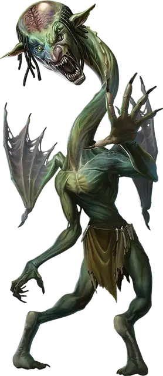

Мутировавший тролль
Troll Mutate
Большой Великан, обычно хаотично-злой

Класс Доспеха 16 (природный доспех)
Хиты 95 (10к10 + 40)
Скорость 30 футов, летая 30 футов (только Крылатая форма)
| мод | спас | ||
|---|---|---|---|
| СИЛ | 19 | +4 | +4 |
| ЛОВ | 13 | +1 | +1 |
| ТЕЛ | 18 | +4 | +7 |
| мод | спас | ||
|---|---|---|---|
| ИНТ | 17 | +3 | +6 |
| МДР | 9 | −1 | −1 |
| ХАР | 12 | +1 | +1 |
Навыки Восприятие +5, Скрытность +4
Чувства слепое зрение 60 футов, пассивное Восприятие 15
Языки Великаний, Телепатия 60 фт.
Опасность 7 (2900 опыта)
Бонус мастерства +3
Особенности
Мутация. Когда мутировавший тролль появляется, он случайным образом получает одну из четырех возможных мутаций тела: 1 - Эластичное тело; 2 - Псионическое зеркало; 3 - Шрамированный заклинаниями; или 4 - Крылатая форма. Эта мутация определяет определенные особенности в этом блоке характеристик.
Аморфный (Только у Эластичного тела). Мутировавший тролль может перемещаться сквозь пространство шириной в 1 дюйм без протискивания.
Сопротивление магии (Только у Шрамированного заклинаниями). Мутировавший тролль совершает с преимуществом спасброски от заклинаний и прочих магических эффектов.
Психическое возмездие (только у Псионического зеркала). Когда мутировавший тролль получает урон психической энергией, каждое существо в пределах 20 футов от него также получает этот урон.
Регенерация. Тролль восстанавливает 10 хитов в начале своего хода. Если мутировавший тролль получает урон кислотой или огнём, эта особенность не действует в начале следующего хода тролля. Мутировавший тролль умирает только если начинает ход с 0 хитов и не может регенерировать. Если мутировавший тролль начинает свой ход с 0 хитов и регенерирует, он случайным образом получает мутацию, которой у него еще нет (максимум до четырех мутаций).
Действия
Мультиатака. Мутировавший тролль совершает две атаки Разрывом.
Разрыв. . Рукопашная атака оружием: +7 к попаданию, досягаемость 5 футов (или 15 футов если имеется мутация Эластичное тело), одна цель. Попадание: 15 (2к10 + 4) рубящего урона плюс 9 (2к8) урона силовым полем.
Психический взрыв (перезарядка 5-6). Мутировавший тролль высвобождает волну психической энергии. Каждое существо в пределах 30 футов от тролля должно совершить спасбросок Интеллекта Сл 14, получая 28 (8к6) урона психической энергией в случае провала или половину этого урона в случае успеха.
Описание
Я просто продолжу напоминать себе, что боги восхищаются разнообразием своих творений, каждый день открываются новые чудеса, а мультивселенная намного больше, чем я могу себе представить. И это хорошо!
- Бигби
Великолепно. Но эти тролли отвратительны.
- Дианкастра
В дварфийском сказании под названием "Сага о Гнарлдане стальном щите " утверждается, что бог Вапрак Разрушитель появился на свет, когда Аннам был ранен и его кровь пролилась на землю. Далее в сказании утверждается, что тролли родились подобным образом, когда была пролита кровь Вапрака. Какова бы ни была правда об их происхождении, тролли воплощают непоколебимую решимость расти и процветать, несмотря на все препятствия.
Быстрое заживление ран у троллей делает их подверженными причудливым мутациям, особенно когда они регенерируют в необычных условиях или излечиваются от необычных магических ран. Сплавы троллей и мутировавший тролль - два примера таких странно мутировавших форм.
Мутировавший тролль
Подвергаясь воздействию разлагающей инопланетной энергии, такой, как та, что обнаруживается возле врат в Дальнее Царство или странной магии, которая исходит из Подземья, возрождающийся тролль претерпевает странные мутации. Среди наиболее распространенных мутаций - крылья, растягивающиеся тела, сопротивление магии и особенность отражающую психические воздействия. У многих мутировавших троллей также есть небольшие дополнительные конечности и глаза, внешние органы и другие вариации.